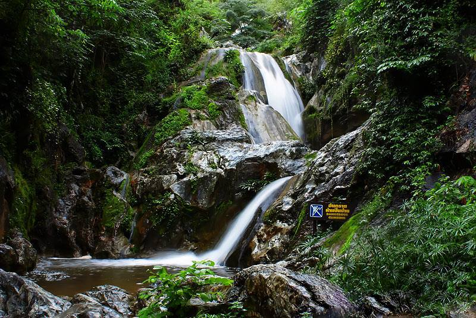
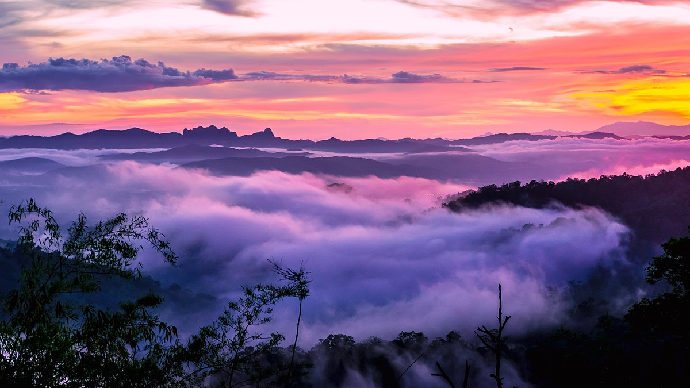
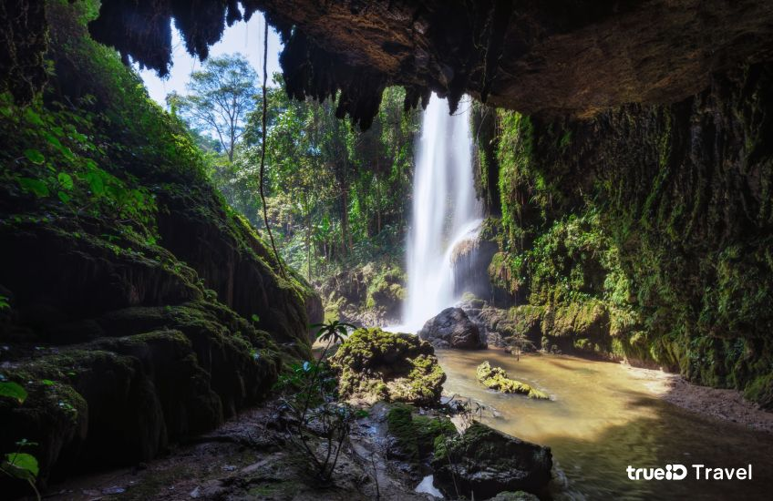

ตาก...เมืองธรรมชาติ
อุทยานแห่งชาติลานสาง

อุทยานแห่งชาติลานสาง มีลำธารไหลผ่านหลายสาย เช่น ลำห้วยลานสาง ห้วยท่าเล่ย์ คลองห้วยทราย ห้วยอุมยอม อีกทั้งป่าในเขตอุทยานฯ มีทั้งป่าดงดิบ ป่าสนเขา ป่าดิบเขา ป่าเต็งรัง ป่าเบญจพรรณ สลับกันไปตามลักษณะภูมิประเทศ ส่วนสัตว์ป่าที่พบเห็น ได้แก่ หมูป่า เก้ง เต่าปูลู เลียงผา ชะมด นกปรอดเหลืองหัวจุก จิ้งก่าบิน เป็นต้น
ตำนานแห่งลานสาง ตามตำนานกล่าวว่า เมื่อครั้งที่สมเด็จพระเจ้ากรุงธนบุรี เสด็จยกทัพไปตีเมืองเชียงใหม่ครั้งที่ 2 ได้ทรงหยุดพักพลที่บ้านระแหง แขวงเมืองตาก มีชาวมอญเข้ามาสวามิภักดิ์ด้วยเป็นจำนวนมาก ทหารพม่าจึงติดตามเข้ามา สมเด็จพระเจ้ากรุงธนบุรีได้เสด็จยกทัพไปขับไล่ และพลัดหลงกับกองทัพ อีกทั้งเป็นเวลากลางคืน สภาพพื้นที่เป็นป่าเขารกทึบ จึงยากแก่การติดตาม กองทัพไทยจึงหยุดพัก ขณะที่พักกันอยู่นั้นได้เกิดมีแสงสว่างพุ่งขึ้นสู่ท้องฟ้า และได้ยินเสียงม้าศึกร้อง จึงรีบพากันไปยังจุดนั้น ก็พบสมเด็จพระเจ้ากรุงธนบุรีประทับม้าอยู่กลางลานหิน และมีแสงสว่างออกมาจากพระวรกาย โดยมีทหารพม่าคุกเข่าหมอบอยู่โดยรอบ ขณะนั้นเป็นเวลาฟ้าสางพอดี จึงเรียกบริเวณนั้นว่า "ลานสาง"
อุทยานแห่งชาติตากสินมหาราช

อุทยานแห่งชาติตากสินมหาราช
ภูมิประเทศเป็นเทือกเขาสูงชันสลับซับซ้อน มีสภาพป่าสมบูรณ์ และอุดมไปด้วยป่าหลากหลายชนิด เช่น ป่าดิบเขา ป่าสนเขา ป่าดงดิบ ป่าเต็งรัง และป่าเบญจพรรณ ทั้งนี้ อุทยานฯ มีสภาพอากาศเย็นสบายตลอดทั้งปี อุณหภูมิโดยเฉลี่ยประมาณ 23 องศาเซลเซียส ฝนตกชุกในช่วงเดือนสิงหาคมถึงเดือนตุลาคม ส่วนฤดูหนาวคือเดือนพฤศจิกายนถึงเดือนมกราคม อุณหภูมิประมาณ 9.1 องศาเซลเซียสในอดีตพื้นที่ป่าแห่งนี้เคยเป็นเส้นทางเดินทัพของไทยและพม่า ในปี พ.ศ. 2305 ในคราวที่พระเจ้าอลองพญากษัตริย์พม่าได้ยกทัพมาล้อมกรุงศรีอยุธยา ทว่าในระหว่างยกทัพกลับ ได้ทรงประชวร และสิ้นพระชนม์ในป่านี้
ไฮไลท์แห่งอุทยานฯ - ต้นกระบากใหญ่ที่มีขนาดใหญ่ที่สุดในประเทศไทย มีอายุประมาณ 700 ปี มีขนาดวัดโดยรอบได้ 16.10 เมตร หรือราว 12 คนโอบ สูง 50 เมตร
อุทยานแห่งชาติขุนพะวอ

อุทยานแห่งชาติขุนพะวอ เดิมมีชื่อว่า อุทยานแห่งชาติแม่กาษา แต่ภายหลังได้เปลี่ยนชื่อเป็น "อุทยานแห่งชาติขุนพะวอ" เพื่อเป็นการยกย่อง พะวอ ทหารชาวกระเหรี่ยงในสมัยสมเด็จพระเจ้าตากสินมหาราชที่ได้รับแต่งตั้งให้เป็นนายด่านแม่ละเมา และสละชีพระหว่างต่อสู้กับข้าศึกเพื่อปกป้องเอกราชของชาติในสมรภูมิรบ ซึ่งก็คือพื้นที่ในบริเวณอุทยานฯ
นอกจากนี้ภายในอุทยานฯ ยังมีป่าเขาที่อุดมสมบูรณ์ และหลากหลาย น้ำตกขุนพะวอ น้ำตกขนาดกลาง 2 ชั้น ที่เกิดจาก ลำห้วยผักไผ่น้ำตกป่าหมาก ที่ผุดออกมาจากหิน และ น้ำตกห้วยกระทิง
โดยวัดยังมีการจัดงานในช่วงเทศกาลสงกรานต์ทุกปีๆ ด้วย นอกจากนั้นก็ยังมีงานประเพณีที่สำคัญ คือ ประเพณีขึ้นธาตุเดือนเก้า เป็นงานที่จัดขึ้นเพื่อเป็นการบูชาพระบรมธาตุ โดยจะจัดในวันขึ้น 14 ค่ำ และ 15 ค่ำ เดือน 9 ของภาคเหนือ ประมาณปลายเดือนพฤษภาคมหรือเดือนมิถุยายนของทุกปีค่ะ ซึ่งภายในงานก็ะมีการจัดขบวนแห่ ทั้ง ขบวนกลองยาว ขบวนปัจจัยไทยทาน ขบวนต้นเงิน ขบวนต้นผ้าป่า ขบวนตุงไชย และ ผ้าห่มองค์พระธาตุ
อุทยานแห่งชาติน้ำตกพาเจริญ

อุทยานแห่งชาติน้ำตกพาเจริญสภาพทั่วไปส่วนใหญ่เป็นป่าเบญจพรรณ ป่าเขาสน และทุ่งดอกกระเจียวสีส้ม ซึ่งเป็นดอกไม้ป่าตามธรรมชาติ แต่ที่อุทยานฯ แห่งนี้จะมีลักษณะแตกต่างจากที่อื่น นั่นก็คือเป็นดอกกระเจียวสีส้มสดโดยจะออกดอกระหว่างเดือนกรกฏาคม-ตุลาคมของทุกปีบริเวณที่ทำการอุทยานฯ
ไฮไลท์แห่งอุทยานฯ - น้ำตกพาเจริญ เป็นน้ำตกหินปูนที่เกิดจากลำห้วยหลายสายไหลมารวมกับแหล่งน้ำซับบนเขา แล้วไหลลงสู่เบื่องล่างเป็นชั้นน้ำตกเล็ก ๆ นับรวมได้ถึง 97 ชั้น มีน้ำไหลตลอดปี